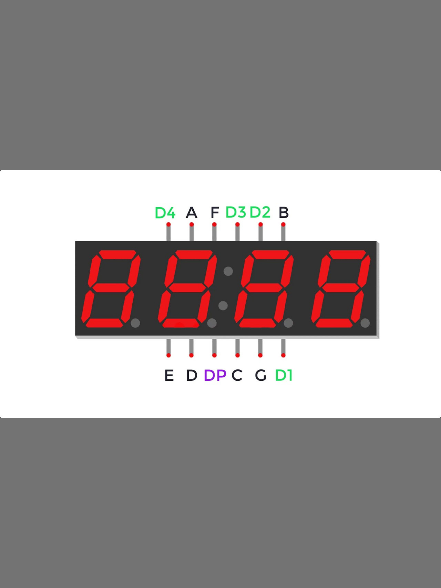

Card or Chip (for ages 60+) needed to enable WiseWalk
system, traffic lights will coordinate with nearby signals
accordingly and provide additional time for the elderlies to
cross the road.

Simulation of WiseWalk (models done in Roblox).

Rc552 RFID Module which is used to enable the countdown to
start on the next green light
WiseWalk features a UWC15 webcam to Monitor cars that
illegally cross while green lighting that may injure the
elderly's.

Active buzzer that slowly speeds up in tempo to match the
remaining time & signals elderly that light is green

Used to signal to elderly to walk. Used to signal drivers
time has also been added.

4 digit 7-segment Display which is used to show the
remaining time
WiseWalk Project Demo Video

Introducing to seniors the innovative design: WiseWalk!